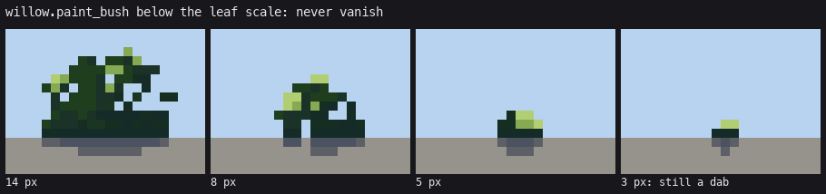
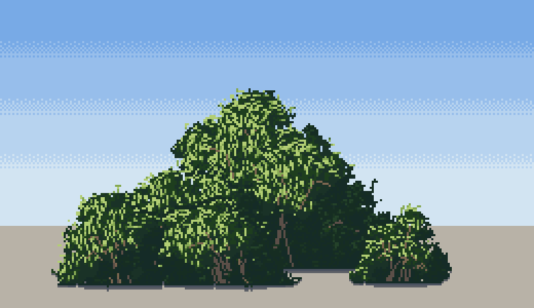
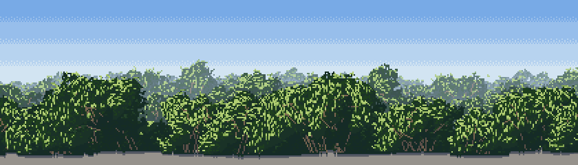

8. Near to far
Back to the tutorial. Code: lod_params, paint_micro, paint_bush in code/willow.py; row_of_bushes in code/stage5.py; clustered in code/stage7.py.

One willow from 150 px wide down to 3.
The ladder: marks never shrink below a pixel
Detail follows the bush's width in pixels. A smaller bush gets fewer, relatively bigger marks, then simpler ones:
| width | clumps | mark | extras |
|---|---|---|---|
| ≥ 110 px | 4–10 px | hanging sprays (how-to 4), silver | wand tips, visible wands, stem hollow |
| 30–110 | 1.5–7 px, scaled | speckle turned along the wands | fewer tips and stems; front sprays above 50 |
| 7–30 | 1.2–3 px | dots and pairs only | no stems, no tips; caps-and-holes edge |
| < 7 | none | paint_micro: a lumpy blob, lit top pixels on the sun side, dark foot |
def lod_params(W_, p=None):
if W_ >= 110:
q = dict(clump=dict(r=(5.0, 10.0) if W_ >= 120 else (4.0, 8.0)),
sprays=dict(r_sep=3.4 if W_ >= 120 else 2.8, ...), ...)
elif W_ >= 30:
s = min(W_, 90) / 80
q = dict(clump=dict(r=(max(1.5, 3.5 * s), max(3.0, 7.0 * s))), sprays=None, ...)
else:
...
Never vanish. Sheet B showed my 3-px willow as an empty cell: the blob test failed and nothing was drawn, which is a pop when a camera pulls back. The floor is a dab: two dark pixels at the foot and one lit on top.
if m.sum() < 3:
for (xx, yy_) in ((c, g - 1), (c + 1, g - 1), (c, g - 2)):
m[yy_, xx] = True
...
if m.sum() <= 4 and y == np.nonzero(m)[0].min():
mat, st = LEAF, 4

Nestling by value
Paint far to near. When a bush goes in front of another, the two rows of the back bush's foliage just above the new bush's crest drop into the shadow family. A lit crest always sits against a dark valley, so bushes separate by value, never by outline:
above = np.zeros_like(new)
for k in range(1, valley + 1):
above |= np.roll(new, -k, 0)
above &= ~new
vz = above & fol # foliage already on the canvas
cv.mat[vz] = LEAFS + BAND * (cv.mat[vz] // BAND); cv.step[vz] = np.minimum(cv.step[vz], 1)

The skirt droops
Splayed wands that stop short make a ledge over bare ground. Droop the outermost wands nearly to the ground (the last Bézier point, how-to 3), and fill any column whose foliage stops above the ground with a curtain down to a hem that rises toward the sides. A curtain filled straight to the ground makes vertical walls.

Every bush its own
In paint_bush, every bush draws its own splay (55–85°), droop, lean, crown width and clump count. Without that, four bushes on a bar were one bush at four sizes.
Rows and groves
- Rows (
row_of_bushes): lay a low understorey of small flattened willows first, so the row's base is continuous. Then crowns with lognormal widths (0.4–2.2× the mean), heights 0.5–0.95 of the width, and a 15% chance of an opening after each. My first rows were "a scalloped border". - Groves (
clustered): cluster centres with uneven gaps, 1–5 plants per cluster packed within about 10 px. Even spacing reads as a colonnade, which the studio's second critic called out as a failure across several students.
def clustered(rng, x0, x1, gap=(20, 70), size=(1, 5), spread=12.0):
xs = []; x = x0 + rng.uniform(0, gap[0])
while x < x1:
n = int(rng.integers(size[0], size[1] + 1))
for _ in range(n):
xs.append(x + rng.normal(0, spread))
x += rng.uniform(*gap) * (0.6 + 0.25 * n)
return sorted(xs)

Practical
Paint each bush in its own small canvas and paste it. Computing a bush's fields over the whole frame made a 50-bush band take more than ten minutes; local canvases took about one.
Still short
The hand-off between rungs is a hard switch at 110, 30 and 7 px, so a slow zoom would pop at each. The grass-lod student solved exactly this (one continuous stroke-size number, each discrete choice dithered against the plant's own random numbers); that's what I'd adopt.